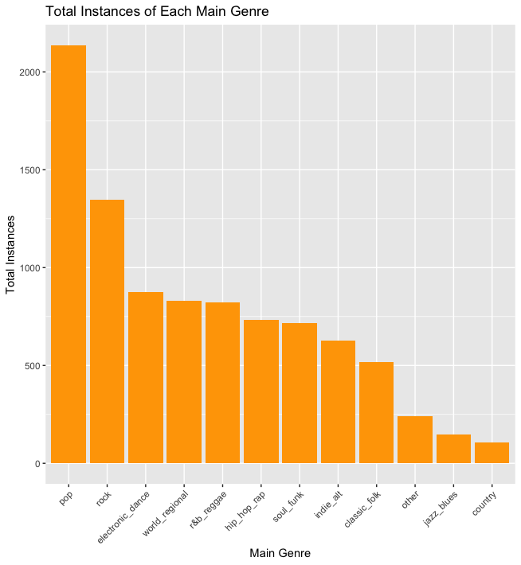
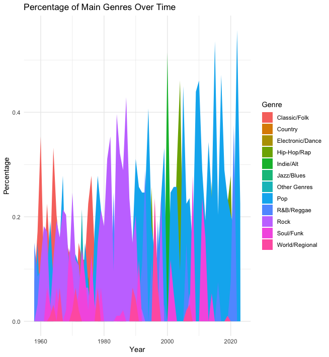
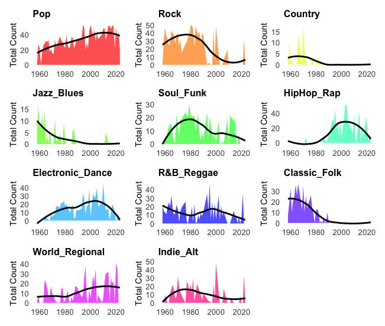
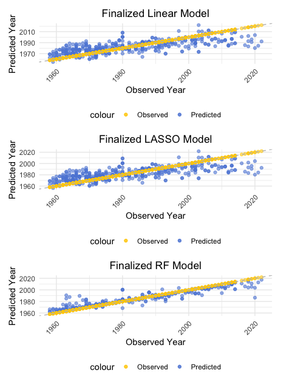

data <- read.csv("./data/raw-data/Hot_100.csv") %>%
select(-chart_debut, -chart_url, -song_id) %>%
rename(artist = performer)Temporal Trends in Popular Music Genres: A Data-Driven Analysis
Elizabeth Hall - Data Analysis Project
1. Abstract
2. Introduction
2.1 Background
The landscape of popular music has undergone significant transformations since the mid-20th century, mirroring shifts in cultural, technological, and social dynamics. The Billboard Hot 100 charts [1], established in 1985, have served as a barometer for musical popularity in the United States, chronicling the most popular genres, artists, and styles over the decades [2]. This project leverages extensive data from the Billboard charts and genre information from Spotify to examine genre trends over time.
The primary dataset for this project comprises records from the Billboard Hot 100 charts, spanning from 1958-2023. This dataset was sourced from a publicly available GitHub repository maintained by user HipsterVizNinja [3]. It encapsulates weekly rankings of songs in the United States, refelcting their commercial success and popularity. The raw dataset is structured as a CSV file titled “Hot_100s.csv” located in the “raw-data” folder within the project repository.
To enrich this dataset with genre information, a cross-reference with the SpotifyAPI was performed. This process involved querying the SpotifyAPI for each unique artist to retrieve their associated musical genres [4]. The SpotifyAPI provides a comprehensive database of songs, artists, and their genres, making it an invaluable recourse for this analysis.
The data also underwent several cleaning and preprocessing steps to ensure its suitability for analysis.These steps included parsing and formatting dates, condensing the dataset for more efficient processing, and categorizing genres into broader classifications to simplify the analysis of genre trends.
2.2 The Question
This project is guided by two primary research questions:
- Genre Popularity: How has the popularity of different music genres evolved over time?
This question seeks to chart the trajectory of musical genres over time, as represented in the Billboard Hot 100 charts from 1085-2023. By mapping these changes, this project aims to illustrate the shifts in musical tastes and preferences among American listeners.
- Audio Feature Evolution: How have trends in audio features evolved over time?
Beyond genre preferences, this question examines the evolution of audio features within popular tracks. By analyzing aspects such as tempo, energy, danceability, and instrumentalness this project aims to reveal underlying patterns within the musical elements of popular tracks.
The ultimate goal of this project is to reveal deeper insights about the evolution of popular music, identifying temporal patterns and anomalies within the preferences of American listeners.
3. Methods
3.1 Data Acquisition
The primary dataset for this project was sourced from the Billboard Hot 100 charts, covering the period from 1958 to 2023. This dataset, which includes weekly ranking of songs based on their commercial success in the United States, was accessed via a publicly available GitHub repository managed by HipsterVizNinja. The data was stored in the file Hot_100.csv located in the “raw-data” folder for this project’s repository.
To compliment the Billboard data with genre and audio feature information, the Spotify Web API was utilized. This API provides access to a comprehensive database of songs, artists, and associated musical genres and audio features which allowed the dataset to be enriched with additional information specific to each entry in the Billboard dataset.
3.2 Data Import
The raw dataset was imported into R using the read.csv function in R. This initial import involved loading the raw data from the Hot_100.csv file, which contained several columns including artist names, song titles, chart positions, and other relevant metadata. To facilitate easier manipulation of the data, irrelevant columns such as chart_debut, chart_url, and song_id were excluded during the import process.
The following R code snippet demonstrates the data import process:
3.3 Data Cleaning
Data cleaning was a multi-step process aimed at preparing the dataset for analysis. This involved several key tasks:
- Date Parsing: The
chart_datecolumn was converted from a string format to a date obkect using theas.Datefunction. This conversion facilitated time-based analysis and grouping of data.
data$chart_date <- as.Date(data$chart_date)- Adding Time Variables: Additional columns for
year,month, andweekwere created using thelubridatepackage to assist in more granular analyses of trends over time.
data$year <- year(data$chart_date)
data$month <- month(data$chart_date)
data$week <- week(data$chart_date)- Handling Duplicates and Aggregation: To focus on the most significant entries, the dataset was condensed to include only the top song per week, per month, per year. This was acheived by grouping the data by these time variables and then arranging by chart position, followed by slicing the top entries.
top_songs_per_week_month_year <- data %>%
group_by(year, month, week) %>%
arrange(year, month, week, peak_position, desc(time_on_chart)) %>%
slice(1) %>%
ungroup() %>%
distinct(song, .keep_all = TRUE)Genre Enrichment: Using the Spotify Web API, each track and artist was queried to fetch their associated genres. This step was crucial to map each song to one or more musical genres, facilitating a genre-based analysis. Since the API was being used to fetch the data, the dataset was condensed to exclude duplicate song entries, this API enhanced dataset was then used to enhance the full dataset without overloading the API.
Genre Simplification: To analyze trends more effectively the multitude of specific genres retrieved from the Spotify API were simplified into fewer, broader genre categories. This was achieved through a combination of automated processing and manual refinement. The first pass of categorization was done using unique genre labels (e.g. pop, rock, jazz, etc.) and guided by the presence of these key terms.
# Example of categorizing sub-genres into main genres
genres <- unique_songs$genres %>% unlist() %>% unique()
pop_genres <- genres[grepl("pop", genres)]
rock_genres <- genres[grepl("rock", genres)]
# Additional categories were created similarlyFor genres that were not clearly assignable through automated keyword matching, manual research was conducted to determine the most appropriate main genre category, ensuring that each genre lable was as accurately represented as possible.
- Adding Missing Information: Despite the extensive available through Spotify, some tracks/artists lacked genre information. To address this, a manual process was implemented to research and assign genres to these entries.
3.4 Exploratory Analysis
The exploratory data analysis aimed to uncover underlying patterns and trends in the genre distribution of the Billboard Hot 100 songs from 1985-2023. Various graphical and statistical techniques were employed in order to visualize and summarize the data. This provided initial insights into the evolution of musical genres.
Summary Statistics
Initially, summary statistics were calculated to provide a broad overview of the dataset attributes. This step helped to identify any outiers or anomalies that may affect future analyses and also served to provide a quick snapshot of the data.
Genre Distribution Visualization
To better understand the distribution of music genres over the dataset, a bar graph was created to show the total instances of each main genre. This visualization helped highlight the most dominant genres within the Billboard Hot 100 over the years.

Trend Analysis Over Time
An area plot was used to visualize the percentage of each main genre over time, offering a clear view of how musical preferences have shifted. This initial analysis was crucial for getting a rough look at the dynamic nature of music trends present in the data.

This exploratory analysis provided foundation insights into the data, setting the stage for more detailed analyses.
4. Results
4.1 Univariate Analysis
The univariate analysis aimed to provide insights into the distribution and trends of different music genres and to analyze the audio features of tracks across these genres.
Genre Distribution Over Time
Using binary flags for each main genre, we quantified the presence of genres in the dataset, enabling a structured analysis of genre trends over time. Next, the total number of songs categorized under each genre per year was analyzed. Visual analysis was then conducted using area plots to display the evolution of music genres over time, highlighting specific trends and shifts.
Pop has shown consistent prevalence, with spikes indicating eras of heightened popularity.
Rock experienced significant popularity in the late 20th century, with a gradual decline in recent years.
Country music shows periodic fluctuations, without a clear long-term trend.
Jazz and Blues have diminished in representation, suggesting a shift in popular taste away from these genres.
Soul and Funk peaked around the 1970s and have since experienced a decline.
Hip-Hop and Rap have seen a notable rise, reflecting their growing influence in mainstream music.
Electronic and Dance genres exhibit an increasing trend, likely due to the rise of digital production methods.
R&B and Reggae have maintained a steady presence with slight fluctuations over time.
Classical and Folk music had a period of popularity in the mid-20th century but have since seen a decline.
World and Regional music shows intermittent peaks, which may be associated with world events and global trends.
Indie and Alternative genres appear to have gained a foothold in more recent years, indicating a shift towards more diverse and non-mainstream music.

Analysis of Audio Features
To explore how audio features have evolved in popular music, a General Additive Model (GAM) was employed to model each feature as a function of time and genre. This approach allowed for the capture of non-linear trends and the influence of genre on the auditory properties of music.
Danceability shows an increasing trend, suggesting a preference for more rhythmically driven tracks in recent decades.
Energy follows a similar upward trend, indicating that songs with higher intensity and activity have become more prevalent.
Loudness has also increased notably, which could reflect both a change in musical style and advancements in recording technology.
Speechiness has seen fluctuating prevalence, potentially mirroring the rise and fall of genres like rap and spoken word.
Acousticness has declined overall, possibly due to the electronic and digital production shift.
Instrumentalness demonstrates a decreasing trend, suggesting that vocal tracks have gained dominance.
Liveness has remained relatively stable, with slight fluctuations that do not indicate a clear trend.
Valence shows variation over time with no long term trend, which reflects the complex nature of mood in music.
Tempo has experienced slight increases, indicating a slight trend towards faster-paced songs.

4.2 Multivariate Analysis
In the multivariate analysis, the relationship between various audio features and the progression of time was explored. The aim was to model and predict trends based on these features. Three different predictive models were employed in order to assess and compare their performances.
Modeling and Prediction
Three regression models were implemented – a Linear Regression, a LASSO Regression, and a Random Forest Regression.
The Random Forest model emerged as the best performing model. The superior performance of the Random Forest model indicates a dynamic shift in the audio features of popular music through the years. This model’s predictive accuracy suggests that:
Musical Evolution: There is a quantifiable evolution in the audio features of music, reflecting changes in listener preferences.
Implications: The model’s success underscores the significant changes in musical attributes that have occurred over the decades, offering a quantitative affirmation of shifts in musical tastes.

5. Discussion
This study demonstrates that there are temporal trends present for popular music genres and their audio features.
5.1 Summary and Interpretation
This study set out to chart the temporal trends of popular music genres and the evolution of audio features in tracks on the Billboard Hot 100 charts form 1985-2023. Temporal were clearly present for both genre and audio features, and those trends were able to be visualized using the tools available in R Studio. The Random Forest model’s capacity to accurately predict the year of the song release based on audio features implies that certain audio features play a key role in a song’s popularity.
5.2 Strengths and Limitations
One of the key strengths of this study is the comprehensive dataset which provided plenty of temporal data to be able to observe trends. Additionally the utilization of the Spotify API allowed for that data to be enriched, allowing for even more temporal analysis. Additionally, this study lent itself well to visualization.
However, this study did not lend itself as well to quantifiable results. Additionally the genre classifications, while informed by Spotify’s comprehensive database, could still subject some songs to misclassification due to the subjective nature of music genres.
5.3 Conclusions
The insights from this study establish that popular music is not static; there are definite trends present both in genre and in audio features suggesting an ever changing music preference from listeners.
6. References
[1]
Tolsen. Billboard hot 100 [Internet]. Billboard; 2024. Available from: https://www.billboard.com/charts/hot-100/.
[2]
Molanphy C. How the hot 100 became america’s hit barometer [Internet]. NPR; 2013. Available from: https://www.npr.org/sections/therecord/2013/08/16/207879695/how-the-hot-100-became-americas-hit-barometer.
[3]
HipsterVizNinja. Hot 100 raw data [Internet]. GitHub. Available from: https://github.com/HipsterVizNinja/random-data/tree/main/Music/hot-100.
[4]
Web API | spotify for developers [Internet]. Available from: https://developer.spotify.com/documentation/web-api/.